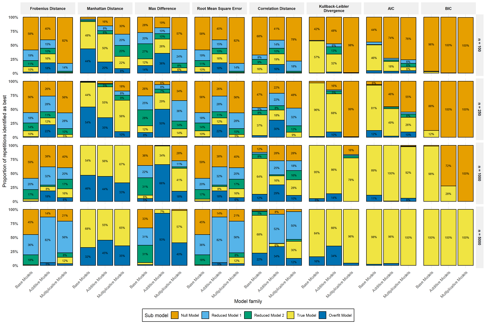
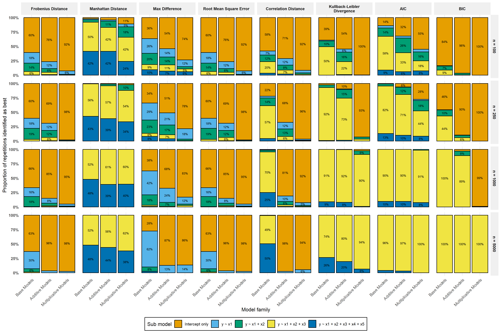

![]()
| Metric | Formula |
|---|---|
| K represents the total number of categories; corr(x, y) = $\frac{\sum_i (x_i - \bar{x})(y_i - \bar{y})}{\sqrt{\sum_i(x_i - \bar{x})^2(\sum_i(y_i - \bar{y})^2}}$ is the Pearson correlation function; vec(⋅) is an operator that converts a matrix into a vector by stacking its columns such that $\text{vec} = (a, b, c, d)^\intercal$; $\psi$ is the number of model parameters; $\ell$ is the model’s log-likelihood; $n$ is the sample size. Additionally, for the Kullback–Leibler divergence, a small constant $\epsilon = 1e-10$ is added to each matrix entry to avoid undefined logarithms when probabilities are zero. | |
| Frobenius norm | $||\mathbf{D}||_F = \sqrt{\sum_{j=1}^{K}\sum_{k=1}^{K} d_{j,k}^2}$ |
| Manhattan distance | $\sum_{j=1}^{K}\sum_{k=1}^{K} |d_{j,k}|$ |
| Maximum absolute error | $\max_{j,k} |d_{j,k}|$ |
| Root mean squared error | $\sqrt{ \frac{1}{K^2} \sum_{j=1}^{K}\sum_{k=1}^{K} d_{j,k}^2 }$ |
| Correlation dissimilarity | $1 - \text{corr}(\text{vec}(\mathbf{P}), \text{vec}(\hat{\mathbf{P}}))$ |
| Kullback-Leibler divergence | $\sum_{j=1}^{K}\sum_{k=1}^{K} (p_{jk} + \epsilon) \, \log\!\left(\frac{p_{jk}}{\hat{p}_{jk}}\right)$ |
| Akaike information criterion | $-2\text{ln}(\hat{\ell}) + 2\psi$ |
| Bayesian information criterion | $-2\text{ln}(\hat{\ell}) + \psi\text{ln}(n)$ |
Discrete time Markov models of cognitive transitions: Assessing goodness of fit
Abstract
Dementia progression is often described as movement between discrete cognitive states, such as normal cognition, mild cognitive impairment, and dementia. Markov models are widely used to analyze such transitions and to estimate the probability of moving between cognitive states over time. However, assessing how well these models capture the underlying transition dynamics is challenging. Conventional likelihood-based criteria evaluate overall model fit but may not adequately reflect whether a model accurately reproduces the observed transition structure. This study proposes and evaluates a transition-based goodness-of-fit framework for discrete-time Markov models. We conducted a simulation study across four sample sizes (100, 250, 1000, 5000). Differences between observed and model-based transition matrices were quantified using several matrix distance metrics and compared with likelihood-based criteria. The proposed approach was also illustrated in a case study examining transitions between cognitive states in dementia. Distance-based metrics distinguished models based on how well they reproduced the true transition structure. When models included state dependence or interaction effects, these metrics more often identified better-performing models. At smaller sample sizes, the Manhattan distance and Kullback–Leibler divergence selected models that best matched the true transition patterns more frequently than AIC or BIC. Similar patterns were observed in the case study. Evaluating how closely models reproduce observed state transitions can provide useful information beyond traditional likelihood-based criteria. Distance-based measures may therefore complement conventional approaches when assessing Markov models of dementia progression and other multi-state processes.
Keywords
Dementia risk, Simulation, Markov models, Transitions
Methods
Simulation study aims
We designed a simulation study to evaluate the performance of different matrix-based distance metrics in assessing the goodness-of-fit of discrete-time Markov models for dementia progression. The primary aim was to determine whether these metrics can reliably detect misspecification in multinomial logistic regression models used to estimate transition probabilities. The study follows best practices for simulation reporting using the ADEMP framework (Morris et al., 2019; Siepe et al., 2024).
Data generating mechanisms
Markov process structure
We simulated data for \(N = 10{,}000\) individuals across \(t = 3\) waves. Consistent with typical dementia progression, the data was simulated for a process with \(K = 3\) mutually exclusive states such that \(S \in \{1, 2, 3\}\), representing a pre-clinical state (1), mild cognitive impairment (2), and dementia (3). For each individual \(i \in \{1,\dots,N\}\) and discrete time point \(t \in \{1, \dots, T\}\), the true state at time \(t\) is denoted as \(Y_{i,t} \in S\). Under a first-order Markov process, transitions between states satisfy the Markov property (Equation 1).
Covariate specification
We generated a set of time-invariant and time-varying covariates designed to mimic plausible risk factors observed in ageing cohort studies (Sonnega et al., 2014). Each covariate was chosen to reflect either a common demographic factor or a behavioral / psychological construct that may influence cognitive transitions (Monaghan et al., 2026).
- \(\mathbf{x_1}\): A binary covariate drawn from a Bernoulli distribution with probability of success \(0.5\). Within the simulation, this variable represents a binary demographic attribute such as gender.
- \(\mathbf{x_2}\): A continuous covariate drawn from a normal distribution \(\mathcal{N}(70, 25)\) and then rounded to the nearest whole number. Within the simulation, this variable represents age.
- \(\mathbf{x_3}\): A rounded continuous covariate from a normal distribution \(\mathcal{N}(25, 225)\), truncated to the interval \([0, 60]\) such that values above or below the interval are set to the nearest value within the interval (i.e., 0 or 60) and then rounded to the nearest whole number. Within the simulation, this variable represents psychological or behavioural assessments (e.g., memory tests or psychosocial scales) with fixed bounded scores.
- \(\mathbf{x_4, x_5}\): Continuous noise variables, drawn from a uniform distribution \(\mathcal{U}(0, 1)\).
Four of these covariates evolved over time to introduce time-varying confounding: \[ \begin{align*} x_{2i,t} &= x_{2i0} + (t - 1) \times 2 \\[2pt] x_{3i,t} &= \min \Big(60, \max\big(0, x_{3i,(t-1)} + \epsilon_{i,t}^{(3)} \big) \Big) && \epsilon_{i,t}^{(3)} \sim N(5, 4) \\[2pt] x_{4i,t} &= \min \Big(1, \max \big(0, x_{4i,t-1} + \epsilon_{i,t}^{(4)} \big)\Big) && \epsilon_{i,t}^{(4)} \sim \mathcal{U}(0, 0.062) \\[2pt] x_{5i,t} &= \min \Big(1, \max \big(0, x_{5i,t-1} + \epsilon_{i,t}^{(5)} \big)\Big) && \epsilon_{i,t}^{(5)} \sim \mathcal{U}(0, 0.062), \end{align*} \]
where \(t \in \{ 1, 2, 3\}\) indexes follow-up waves. The full covariate vector for individual \(i\) at time \(t\) was \(\mathbf{x}_{i,t} = (x_{1i,t}, \; x_{2i,t}, \; x_{3i,t}, \; x_{4i,t}, \; x_{5i,t})\).
Simulation scenarios
We evaluated three data-generating mechanisms (DGMs) of increasing complexity. In all scenarios, transition probabilities were governed by a multinomial logistic model (supplementary equation A1) with state 1 as the reference category. The corresponding transition probability for each non-reference category was calculated using supplementary equation A2 and for the reference category using supplementary equation A3. Additionally, all true value parameters vectors for scenarios S1, S2, and S3 \((\pmb{\theta}_{S1}, \pmb{\theta}_{S2}, \pmb{\theta}_{S3}, \text{respectively})\) were derived from prior empirical research investigating behavioral correlates of dementia transitions (Monaghan et al., 2026).
In scenario 1, transitions depended solely on a set of individual covariates \(\mathbf{X}_{i,t} = (x_{1it}, x_{2it}, x_{3it})\), with no effect of the previous state. Within this scenario, the linear predictor was defined as: \[ \eta^{(k)}_{i,t} = \alpha_{k} + \mathbf{X}_{it}^\intercal \pmb{\beta}_{k}, \]
with true value parameters set as: \[ \begin{align*} \pmb{\theta}_{S1} &= (\alpha_k, \; \beta_{1k}, \; \beta_{2k}, \; \beta_{3k}), \; k = 2, 3) \\[4pt] \pmb{\alpha} &= (-5.152, -5.402) \\[4pt] \pmb{\beta} &= (0.008, -0.034, 0.036, 0.017, 0.028, 0.045). \end{align*} \]
In scenario 2, transitions depended additively on both the covariates \(\mathbf{X}_{i,t} = (x_{1it}, x_{2it}, x_{3it})\) and the individual’s previous state \(Y_{it}\). Within this scenario, the linear predictor was defined as: \[ \begin{align*} \eta^{(k)}_{i,t} &= \alpha_{k} + \mathbf{X}_{it}^\intercal \pmb{\beta}_{k} + \mathbf{S}_{it}^\intercal \gamma_k, \end{align*} \]
where \(\mathbf{S}_{it}\) is an indicator variable. The true value parameters were set as:
\[ \begin{align*} \pmb{\theta}_{S2} &= (\alpha_k, \; \beta_{1k}, \; \beta_{2k}, \; \beta_{3k}, \gamma_{1k}, \; \gamma_{2k}), \; k = 2, 3 \\[2pt] \pmb{\alpha} &= (-5.370, -7.907) \\[2pt] \pmb{\beta} &= (0.02, -0.011, 0.036, 0.039, 0.022, 0.016, 1.711, 2.790) \\[2pt] \pmb{\gamma} &= (-0.776, 20.914). \end{align*} \]
Finally, in scenario 3, transitions depended both on the covariates \(\mathbf{X}_{i,t} = (x_{1it}, x_{2it}, x_{3it})\) and the individual’s previous state \(Y_{it}\) along with their corresponding interactions. Within this scenario, the linear predictor was defined as:
\[ \eta^{(k)}_{i,t} = \alpha_{k} + \mathbf{X}_{it}^\intercal \pmb{\beta}_{k} + \mathbf{S}_{it}^\intercal \pmb{\gamma}_k + (\mathbf{X}_{it} \otimes \mathbf{S}_{it})^\intercal \pmb{\delta}_{k}, \]
with true value parameters defined as: \[ \begin{align*} \pmb{\theta}_{S3} &= (\alpha_k, \; \beta_{1k}, \; \beta_{2k}, \; \beta_{3k}, \gamma_{1k}, \; \gamma_{2k}, \; \delta_{1k}, \; \delta_{2k},\; \delta_{3k},\; \delta_{4k}, \; \; \delta_{5k},\; \delta_{6k},: k = 2, 3) \\[2pt] \pmb{\alpha} &= (-5.885, -10.613) \\[2pt] \pmb{\beta} &= (0.102, 0.615, 0.043, 0.076, 0.019, -0.002) \\[2pt] \pmb{\gamma} &= (3.845, 7.901, -0.638, 12.753) \\[2pt] \pmb{\delta} &= (-0.292, -1.019, -0.474, -1.268, -0.031, -0.072, 0.093, 0.1, 0.008, 0.029, -0.082, -0.021). \end{align*} \]
Estimation methods
Model fitting
For each simulated dataset, we first partitioned the data into training \((80\%)\) and test \((20\%)\) sets. Model parameters were estimated exclusively on the training data, while all performance evaluations were conducted on held-out test data. This was done so as to assess the out-of-sample recovery of transition dynamics. For each training set, we fitted 15 multinomial logistic regression models using the nnet package (Venables & Ripley, 2002) across 4 different sample sizes \(\{100, 250, 1000, 5000\}\). These models were grouped into three “families”, corresponding to the level of model misspecification relative to the true DGM.
- Base Models (Ignoring Markov Property)
\[ \begin{align*} \text{Null:} &\quad Y_{t+1} \sim 1 \\ \text{Reduced 1:} &\quad Y_{t+1} \sim x1 \\ \text{Reduced 2:} &\quad Y_{t+1} \sim x1 + x2 \\ \text{True:} &\quad Y_{t+1} \sim x1 + x2 + x3 \quad \text{(Exact DGM for Scenario 1)} \\ \text{Overfit:} &\quad Y_{t+1} \sim x1 + x2 + x3 + x4 + x5 \end{align*} \tag{2}\]
- Additive Models (With State Dependence)
\[ \begin{align*} \text{Null:} &\quad Y_{t+1} \sim Y_t \\ \text{Reduced 1:} &\quad Y_{t+1} \sim x1 + Y_t \\ \text{Reduced 2:} &\quad Y_{t+1} \sim x1 + x2 + Y_t \\ \text{True:} &\quad Y_{t+1} \sim x1 + x2 + x3 + Y_t \quad \text{(Exact DGM for Scenario 2)} \\ \text{Overfit:} &\quad Y_{t+1} \sim x1 + x2 + x3 + x4 + x5 + Y_t \end{align*} \tag{3}\]
- Multiplicative Models (With Interactions)
\[ \begin{align*} \text{Null:} &\quad Y_{t+1} \sim Y_t \\ \text{Reduced 1:} &\quad Y_{t+1} \sim x1 * Y_t \\ \text{Reduced 2:} &\quad Y_{t+1} \sim (x1 + x2) * Y_t \\ \text{True:} &\quad Y_{t+1} \sim (x1 + x2 + x3) * Y_t \quad \text{(Exact DGM for Scenario 3)} \\ \text{Overfit:} &\quad Y_{t+1} \sim (x1 + x2 + x3 + x4 + x5) * Y_t \end{align*} \tag{4}\]
Model-based transition probabilities
To evaluate how well each fitted model \(\mathcal{M}\) captured the underlying transition dynamics, we generated model-based transition probability matrices via a two step procedure. In the first step, an augmented version of the test dataset was created enabled the model to predict transitions from all possible previous states. For each individual \(i\) at each time point \(t\), three augmented rows were created corresponding to the three possible previous states \(j \in \{1,2,3\}\). This ensured that the fitted model could generate predicted probabilities \[ P(Y_{t+1} = k \; \vert \; Y_t = j, \mathbf{z}_{i,t}) \]
for every \(j\), regardless of the individual’s actual previous state in the data.
In the second step, we derived the transition behaviour implied by each model by predicting next-state transitions using the model’s estimated parameters. For each model \(\mathcal{M}\), the estimated coefficients vector \(\pmb{\hat{\theta}}^{\mathcal{M}}\) were used to compute predicted probabilities for all possible state transitions \((j \rightarrow k)\).
Performance Measures
The core of our evaluation involved comparing the empirical transition matrix from the test dataset to the model-implied transition matrix. Let \(\mathbf{P}_{i,t}\) be the empirical transition matrix for individual \(i\) at time \(t\) obtained by tabulating state transitions \((Y_{i,t}, Y_{i, t+1})\) from the test dataset. Additionally, let \(\hat{\mathbf{P}}_{i,t}\) be the model-implied transition matrix. For individual \(i\) at time \(t\) with a covariates pattern \(\mathbf{z}_{i,t}\) this is a \(K \times K\) matrix where the entry \(j, k\) is the model’s predicted probability \(P(Y_{t+1} = k \; \vert \; Y_t = j, \mathbf{z}_{i,t})\). We defined the difference matrix as \(\mathbf{D}_{i,t} = \mathbf{P}_{i,t} - \hat{\mathbf{P}}_{i,t}\) and quantify the discrepancy using the distance metrics defined in Table 1.
Results
Initially we present an exploratory analysis of the data from each scenario using contingency tables. Table 2 summarizes the unconditional transitions and transition probabilities between each cognitive state across the scenarios.
| Current state (t) | ||||
|---|---|---|---|---|
| Previous state (t-1) | 1 | 2 | 3 | Total |
| Base simulation | Base simulation | Base simulation | Base simulation | Base simulation |
| 1 | 12856 (0.64) |
2456 (0.12) |
847 (0.04) |
16159 |
| 2 | 2155 (0.11) |
498 (0.02) |
204 (0.01) |
2857 |
| 3 | 750 (0.04) |
167 (0.01) |
67 (0.003) |
984 |
| Additive simulation | Additive simulation | Additive simulation | Additive simulation | Additive simulation |
| 1 | 13817 (0.69) |
1996 (0.10) |
192 (0.01) |
16005 |
| 2 | 1657 (0.08) |
2606 (0.04) |
162 (0.01) |
2606 |
| 3 | 120 (0.01) |
55 (0.003) |
1214 (0.06) |
1389 |
| Multiplicative simulation | Multiplicative simulation | Multiplicative simulation | Multiplicative simulation | Multiplicative simulation |
| 1 | 14030 (0.70) |
1921 (0.10) |
166 (0.01) |
16117 |
| 2 | 1602 (0.08) |
712 (0.04) |
167 (0.01) |
2481 |
| 3 | 102 (0.01) |
61 (0.003) |
1239 (0.06) |
1402 |
To evaluate the ability of each distance metric to identify the true data-generating model, we examined the proportion of simulation repetitions in which each model \(\mathcal{M}\) was ranked as the best-fitting (Figure 1).
Small sample sizes
For the smallest sample size \((n = 100)\) clear differences emerged between distance-based metrics and likelihood-based information criteria. Across both additive and multiplicative generative scenarios, the Manhattan distance and the Kullback–Leibler divergence identified the true model at rates comparable to, and in several cases exceeding, those of AIC and BIC. As shown in Figure 1 both metrics maintained a non-trivial probability of selecting the true model even under increased model complexity, whereas the information criteria frequently favoured simpler alternatives. This relative robustness at small \(n\) suggests that the Manhattan distance and KL divergence are less sensitive to the sampling variability that destabilises likelihood-based criteria in sparse data settings. In contrast, the remaining metrics (e.g., Frobenius norm, RMSE, correlation dissimilarity) showed mixed performance, often favoring overfitted or reduced models.
At \(n = 250\), AIC showed modest improvement, particularly for simpler generative mechanisms. However, it continued to misidentify the true model under increased complexity, most notably in the multiplicative scenarios. BIC remained unreliable across all scenarios, strongly penalizing model complexity and frequently selecting the null model. In contrast, the Manhattan distance continued to demonstrate comparatively stable recovery of the true model across repetitions, and most clearly outperformed AIC in the more complex additive and multiplicative settings. The Kullback–Leibler divergence similarly outperformed both AIC and BIC up to, but not including, the most complex multiplicative scenario.
Moderate sample sizes
With a further increase in sample size \((n = 1000)\), the performance of AIC improved substantially. As shown by Figure 1 AIC correctly identified the true model in over approximately \(90\%\) of repetitions across all generative scenarios. However, BIC continued to exhibit systematic underfitting, performing well only in the simplest generative scenario and frequently favoring the null model in both the additive and multiplicative scenarios.
The distance-based metrics displayed a more gradual improvement with increasing sample size. Most notably, the Kullback–Leibler divergence performed nearly equivalently to AIC across all scenarios, indicating strong sensitivity to discrepancies in the underlying transition structure. The Manhattan distance also remained informative, ranking the true model as best fitting in approximately half of all repetitions across scenarios. Although this performance was weaker than that of AIC, it did not deteriorate with increasing model complexity, suggesting that this metric captures aspects of model misspecification that are not fully reflected in likelihood-based criteria. The remaining distance measures continued to show heterogeneous behaviour, alternating between overfitting and instability across repetitions.
Large sample sizes
At the largest sample size \((n = 5000)\), both AIC and BIC exhibited near-perfect performance, identifying the true model in essentially all simulation repetitions across all generative scenarios. This convergence confirms that, when sufficient data are available, traditional likelihood-based information criteria are adequate for reliable model recovery. In contrast, the relative performance of the distance-based metrics was largely comparable to that observed at \(n = 1000\) showing limited additional gains with further increases in sample size. Notably, however, the Kullback–Leibler divergence mirrored the behaviour of AIC and BIC, identifying the true model in nearly all repetitions even under the most complex multiplicative generative scenario.

Case study
We illustrate the proposed goodness-of-fit assessment framework using data from the United States Health and Retirement Study (HRS; Sonnega et al. (2014)). The HRS is a nationally representative longitudinal panel study administered by the Institute for Social Research at the University of Michigan, which follows American adults aged 50 years and older. Since its inception in 1992, the HRS has collected biennial data on participants’ health, socioeconomic circumstances, and cognitive functioning, making it a widely used resource for studying cognitive ageing and dementia trajectories. For the purpose of this illustration, we focus on three of these biennial waves from 2018 - 2022, yielding a sample of \(n = 10{,}895\) respondents.
Cognitive function in the HRS is measured using a battery of assessments adapted from the Telephone Interview for Cognitive Status (TICS; Fong et al. (2009)), which is based on the Mini-mental State Examination (Folstein et al., 1975). These assessments include immediate and delayed noun free-recall tasks to evaluate episodic memory, a serial sevens subtraction task to assess working memory, and a backward counting task to capture mental processing speed. Based on these assessments, Crimmins et al. (2011) developed a validated 27-point cognitive scale along with established cut-off points to classify respondents’ cognitive status. Following this classification scheme, respondents scoring between 12 and 27 were classified as having normal cognition, scores between 7 and 11 indicated mild cognitive impairment (MCI), and scores between 0 and 6 were classified as dementia.
From the available HRS covariates, we selected three predictors that are commonly examined in studies of cognitive decline (Livingston et al., 2024): sex (\(x_1\)), age (\(x_2\)), and a five-point ordinal self-rating of memory (\(x_3\)). To mirror the design of the simulation study and to assess the ability of the proposed distance metrics to distinguish informative predictors from noise, we additionally simulated two non-informative covariates from a Uniform distribution, such that \(\{x_4; x_5\} \sim \mathcal{U}(0, 1)\). In addition, we included the respondent’s cognitive status \(Y_t\) when necessary (i.e., Equation 3 and Equation 4).
Using this covariate set, we followed the same model-fitting and evaluation procedure as in the simulation study. Specifically, the data were split into training (80%) and test (20%) sets, the 15 multinomial logistic regression models defined in Equation 2, Equation 3, and Equation 4 were fitted, and observed transition probabilities \(\mathbf{P}_{i,t}\) were compared to predicted probabilities \(\hat{\mathbf{P}}_{i,t}\). Figure 2 summarises the relative performance of each model across the different goodness-of-fit measures.
Consistent with the simulation results (see Figure 1), both the Manhattan distance and the Kullback–Leibler divergence most frequently identified the model containing the three substantively meaningful predictors \((x1, x2, x3)\) in approximately \(50\%\) of repetitions in both the base and additive scenarios. In the more complex multiplicative scenario, differences between the distance metrics became more pronounced. While the Manhattan distance increasingly favoured the model excluding the simulated noise covariates as sample size grew, the Kullback–Leibler divergence required substantially larger samples \((n = 1000)\) before consistently identifying the model containing only the non-simulated predictors (mirroring that of the simulation study).

Discussion
This study evaluated a set of matrix-based distance metrics as tools for assessing goodness-of-fit in discrete-time Markov models estimated via multinomial logistic regression, with particular emphasis on applications to dementia progression modelling. Through a combination of simulation experiments and an empirical case study using HRS data, we demonstrate that distance-based comparisons of observed and model-implied transition matrices provide information that is complementary to, and in some settings (e.g., \(n \in \{100, 250\}\)) more reliable than, traditional likelihood-based information criteria.
Across the simulation study, two distance metrics consistently exhibited strong performance: the Manhattan distance and the Kullback–Leibler divergence. Both exhibited strong and comparatively stable performance across a range of sample sizes and data-generating mechanisms, particularly under increased model complexity. Most notably, the Manhattan distance frequently outperformed AIC and BIC in small samples and in settings involving interaction effects or strong state dependence. This finding suggests that the Manhattan distance is comparatively robust to the sampling variability that can destabilise likelihood-based criteria in finite samples (Emiliano et al., 2014).
The KL divergence displayed a complementary pattern. While less robust than the Manhattan distance in the smallest samples and most complex scenarios, its performance improved rapidly with increasing sample size. By moderate to large samples, KL closely mirrored the behaviour of AIC, and at the largest sample sizes it achieved near-perfect recovery of the true model even under the most complex multiplicative data-generating mechanisms. This aligns with the theoretical interpretation of KL divergence as a measure of information loss between true and fitted transition distributions (Kullback & Leibler, 1951).
As expected, the performance of traditional information criteria improved substantially with increasing sample size. In large samples, both AIC and BIC demonstrated near-perfect recovery of the true data-generating model, consistent with their well-established asymptotic properties. These results confirm that likelihood-based approaches remain appropriate and effective when data are abundant and model complexity is well supported.
However, the more gradual convergence of the distance-based metrics highlights an important conceptual distinction. Distance metrics do not aim to optimise predictive likelihood. Instead, they assess how well a fitted model reproduces the empirical transition structure itself. Their continued sensitivity to structural discrepancies, even in larger samples, should therefore be viewed as a strength rather than a limitation. In applied settings, particularly in disease progression modelling, a model that fits well in likelihood terms may still produce implausible or distorted transition dynamics, a form of misspecification that distance-based diagnostics are well positioned to detect.
The empirical case study using HRS data further corroborated the simulation findings. Both the Manhattan distance and KL divergence tended to favour models containing substantively meaningful predictors of cognitive decline (sex, age, and self-rated memory), while remaining comparatively insensitive to the inclusion of simulated non-informative covariates. This behaviour is consistent with the intended role of the distance metrics: to distinguish meaningful signal in transition dynamics from noise introduced by irrelevant predictors.
Taken together, these findings suggest that matrix-based distance metrics, in particularl the Manhattan distance and KL divergence, provide a valuable addition to the model evaluation toolkit for discrete-time Markov models. Rather than serving as replacements for AIC or BIC, these measures are best viewed as complementary diagnostics that foreground structural fidelity of transition dynamics. Their use is especially well suited to applied research contexts, such as dementia progression modelling, where the realism and interpretability of implied transitions are at least as important as predictive likelihood.
Limitations and future directions
Several limitations of the present study suggest directions for future research. First, although the proposed goodness-of-fit framework captures discrepancies in transition structure that are not reflected in likelihood-based criteria, the choice of distance metric remains context dependent. Different distance metrics emphasize different aspects of the transition matrix (e.g., global versus state-specific discrepancies, absolute versus distributional differences), and no single metric can be considered universally optimal. Future work could explore principled strategies for selecting or combining distance measures, potentially informed by substantive theory or decision-analytic considerations (Lee et al., 2025; Wu et al., 2021)
Secondly, this simulation framework is restricted to discrete-time, first-order Markov processes estimated using generalized logit models. While this specification covers a broad and widely used class of state transition models, it does not encompass more complex forms of dependence.
Several extensions therefore represent promising avenues for future work. These include higher-order Markov processes, (i.e., where transitions depend on multiple previous states) and continuous-time formulations. In addition, hidden Markov models, which incorporate latent state dynamics, would provide a natural extension for settings with measurement error or unobserved heterogeneity (Zeng et al., 2010). Beyond the generalized logit framework used here, other important classes of categorical outcome models, such as ordinal transition models and alternative link specifications, could also be investigated to assess whether the proposed goodness-of-fit framework performs similarly across modelling paradigms.
Conclusions
Matrix-based distance metrics offer a principled and interpretable complement to likelihood-based criteria for assessing discrete-time Markov models. By directly comparing empirical transition matrices to those implied by fitted models, these measures provide diagnostic information that is particularly sensitive to structural misspecification. The strong finite-sample performance of the Manhattan distance and the favourable asymptotic behaviour of the Kullback–Leibler divergence highlight their practical utility, especially in applied longitudinal settings where accurate representation of transition dynamics is central to substantive inference.
References
Araripe, P. P., Rodrigues De Lara, I. A., Rodrigues Palma, G., Cahill, N., & De Andrade Moral, R. (2024). Diagnostics for categorical response models based on quantile residuals and distance measures. Journal of Applied Statistics, 1–23. https://doi.org/10.1080/02664763.2024.2367150
Costa, L. M., Colaço, J., Carvalho, A. M., Vinga, S., & Teixeira, A. S. (2023). Using Markov chains and temporal alignment to identify clinical patterns in Dementia. Journal of Biomedical Informatics, 140, 104328. https://doi.org/10.1016/j.jbi.2023.104328
Crimmins, E. M., Kim, J. K., Langa, K. M., & Weir, D. R. (2011). Assessment of Cognition Using Surveys and Neuropsychological Assessment: The Health and Retirement Study and the Aging, Demographics, and Memory Study. The Journals of Gerontology: Series B, 66B, i162–i171. https://doi.org/10.1093/geronb/gbr048
Emiliano, P. C., Vivanco, M. J., & De Menezes, F. S. (2014). Information criteria: How do they behave in different models? Computational Statistics & Data Analysis, 69, 141–153. https://doi.org/10.1016/j.csda.2013.07.032
Folstein, M. F., Folstein, S. E., & McHugh, P. R. (1975). Mini-mental state. Journal of Psychiatric Research, 12(3), 189–198.
Fong, T. G., Fearing, M. A., Jones, R. N., Shi, P., Marcantonio, E. R., Rudolph, J. L., Yang, F. M., Dan Kiely, K., & Inouye, S. K. (2009). Telephone Interview for Cognitive Status: Creating a crosswalk with the Mini-Mental State Examination. Alzheimer’s & Dementia, 5(6), 492–497. https://doi.org/10.1016/j.jalz.2009.02.007
Jackson, C. H. (2011). Multi-state models for panel data: The msm package for R. Journal of Statistical Software, 38(8), 1–29. https://doi.org/10.18637/jss.v038.i08
Kullback, S., & Leibler, R. A. (1951). On information and sufficiency. The Annals of Mathematical Statistics, 22(1), 79–86. https://doi.org/10.1214/aoms/1177729694
Lee, A. R., Tino, P., & Styles, I. B. (2025, May 5). A distance function for stochastic matrices. https://doi.org/10.48550/arXiv.2410.12689
Livingston, G., Huntley, J., Liu, K. Y., Costafreda, S. G., Selbæk, G., Alladi, S., Ames, D., Banerjee, S., Burns, A., Brayne, C., Fox, N. C., Ferri, C. P., Gitlin, L. N., Howard, R., Kales, H. C., Kivimäki, M., Larson, E. B., Nakasujja, N., Rockwood, K., … Mukadam, N. (2024). Dementia prevention, intervention, and care: 2024 report of the Lancet standing Commission. The Lancet, 404(10452), 572–628. https://doi.org/10.1016/S0140-6736(24)01296-0
Monaghan, C., De Andrade Moral, R., Kelly, M., & McHugh Power, J. (2026). Procrastination as a marker of cognitive decline: Evidence from longitudinal transitions in the older adult population. Alzheimer’s & Dementia: Diagnosis, Assessment & Disease Monitoring, 18(1), e70245. https://doi.org/10.1002/dad2.70245
Morris, T. P., White, I. R., & Crowther, M. J. (2019). Using simulation studies to evaluate statistical methods. Statistics in Medicine, 38(11), 2074–2102. https://doi.org/10.1002/sim.8086
Prince, M., Bryce, R., Albanese, E., Wimo, A., Ribeiro, W., & Ferri, C. P. (2013). The global prevalence of dementia: A systematic review and metaanalysis. Alzheimer’s & Dementia, 9(1), 63. https://doi.org/10.1016/j.jalz.2012.11.007
R Core Team. (2025). R: A language and environment for statistical computing. R Foundation for Statistical Computing. https://www.R-project.org/
Salazar, J. C., Schmitt, F. A., Yu, L., Mendiondo, M. M., & Kryscio, R. J. (2007). Shared random effects analysis of multi-state Markov models: Application to a longitudinal study of transitions to dementia. Statistics in Medicine, 26(3), 568–580. https://doi.org/10.1002/sim.2437
Sanz-Blasco, R., Ruiz-Sánchez de León, J. M., Ávila-Villanueva, M., Valentí-Soler, M., Gómez-Ramírez, J., & Fernández-Blázquez, M. A. (2022). Transition from mild cognitive impairment to normal cognition: Determining the predictors of reversion with multi-state Markov models. Alzheimer’s & Dementia, 18(6), 1177–1185. https://doi.org/10.1002/alz.12448
Siepe, B. S., Bartoš, F., Morris, T. P., Boulesteix, A.-L., Heck, D. W., & Pawel, S. (2024). Simulation studies for methodological research in psychology: A standardized template for planning, preregistration, and reporting. Psychological Methods. https://doi.org/10.1037/met0000695
Sonnega, A., Faul, J. D., Ofstedal, M. B., Langa, K. M., Phillips, J. W., & Weir, D. R. (2014). Cohort profile: The health and retirement study (HRS). International Journal of Epidemiology, 43(2), 576–585. https://doi.org/10.1093/ije/dyu067
Spackman, D. E., Kadiyala, S., Neumann, P. J., Veenstra, D. L., & Sullivan, S. D. (2012). Measuring Alzheimer disease progression with transition probabilities: Estimates from NACC-UDS. Current Alzheimer Research, 9(9), 1050–1058. https://doi.org/10.2174/156720512803569046
Spedicato, G. A. (2017). Discrete time markov chains with r. The R Journal, 9, 84–104. https://doi.org/10.32614/RJ-2017-036
Tahami Monfared, A. A., Fu, S., Hummel, N., Qi, L., Chandak, A., Zhang, R., & Zhang, Q. (2023). Estimating Transition Probabilities Across the Alzheimer’s Disease Continuum Using a Nationally Representative Real-World Database in the United States. Neurology and Therapy, 12(4), 1235–1255. https://doi.org/10.1007/s40120-023-00498-1
Ucar, I., Smeets, B., & Azcorra, A. (2019). simmer: Discrete-event simulation for R. Journal of Statistical Software, 90(2), 1–30. https://doi.org/10.18637/jss.v090.i02
Venables, W. N., & Ripley, B. D. (2002). Modern applied statistics with s (Fourth). Springer. https://www.stats.ox.ac.uk/pub/MASS4/
Wei, S., Xu, L., & Kryscio, R. J. (2014). Markov transition model to dementia with death as a competing event. Computational Statistics & Data Analysis, 80, 78–88. https://doi.org/10.1016/j.csda.2014.06.014
William, N. (2013). DTMCPack: Suite of functions related to discrete-time discrete-state markov chains. https://cran.r-project.org/web/packages/DTMCPack/index.html
Williams, J. P., Storlie, C. B., Therneau, T. M., Jr, C. R. J., & Hannig, J. (2020). A Bayesian Approach to Multistate Hidden Markov Models: Application to Dementia Progression. Journal of the American Statistical Association, 115(529), 16–31. https://doi.org/10.1080/01621459.2019.1594831
Wu, L., Xu, Y., Zhao, Y., Hu, Z., & Sun, L. (2021). A dual distance metrics method for improving classification performance. Electronics Letters, 57(1), 13–16. https://doi.org/10.1049/ell2.12016
Yu, H., Yang, S., Gao, J., Zhou, L., Liang, R., & Qu, C. (2013). Multi-state Markov model in outcome of mild cognitive impairments among community elderly residents in Mainland China. International Psychogeriatrics, 25(5), 797–804. https://doi.org/10.1017/S1041610212002220
Zeng, J., Duan, J., & Wu, C. (2010). A new distance measure for hidden markov models. Expert Systems with Applications, 37(2), 1550–1555. https://doi.org/10.1016/j.eswa.2009.06.063
Zhang, Y. F., Zhang, Q. F., & Yu, R. H. (2010). Markov property of Markov chains and its test. 2010 International Conference on Machine Learning and Cybernetics, 4, 1864–1867. https://doi.org/10.1109/icmlc.2010.5580952